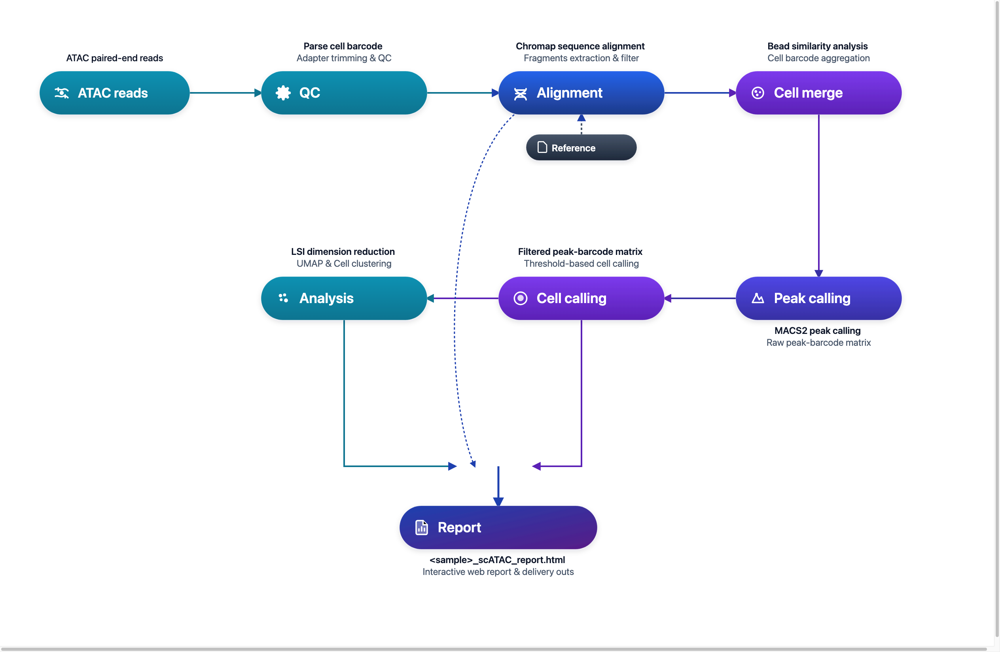

DNBelab C Series HT scATAC 分析流程¶
单细胞 ATAC 测序数据分析说明
概述 ¶
本文档详细介绍了使用 dnbc4tools 进行单细胞 ATAC 测序数据分析的完整流程。
工作流程：原始数据 → 质量控制 → 比对 → 微珠合并 → Peak调用 → 细胞识别 → 降维聚类 → 分析报告

使用说明： $dnbc4tools 代表可执行程序路径，需替换为您的实际安装路径。本文示例使用换行符 \ 分隔命令以提高可读性，实际分析时可写为单行。
文件准备 ¶
分析需要 FASTQ 文件：
| 文件类型 | 说明 |
|---|---|
| ATAC 文库 | 包含 Cell Barcode 和染色质开放区域信息的测序数据 |
注意：确保 FASTQ 文件质量良好，并记录好文件路径用于后续分析。
参考数据库 ¶
参考数据库输入文件¶
| 文件类型 | 格式 | 说明 |
|---|---|---|
| 基因组文件 | FASTA | 包含特定物种的完整基因组序列，包括染色体、线粒体及其他遗传信息，通常为主装配版本。这些文件为基因组分析和比对提供基础数据。 |
| 注释文件 | GTF | 包含基因组中基因、转录本、外显子及其他功能区域的详细信息。该文件标识基因的位置、类型及其相关属性。 |
推荐数据来源：优先使用 Ensembl 数据库 提供的文件。Ensembl 的 GTF 文件包含可选标签，便于通过
dnbc4tools tools mkgtf进行过滤。GTF 文件要求：
- 必须包含
gene或transcript类型以及exon类型的注释。- 属性中必须包含
gene_id或gene_name以及transcript_id或transcript_name。- 不支持 GFF 文件格式。
- 基因组文件与注释文件需版本对应。
GTF 文件处理（可选）¶
有关 GTF 文件过滤的详细信息，请参考 scRNA 分析流程。
参考数据库构建¶
在运行 dnbc4tools atac run 分析之前，需要先构建参考数据库。此步骤使用注释文件（GTF）和参考基因组（FASTA）构建索引文件，用于测序 reads 的比对和统计分析。
单物种参考数据库构建（以小鼠为例）¶
# 构建单物种参考数据库
$dnbc4tools atac mkref \
--fasta genome.fa \
--ingtf genes.gtf \
--species Mus_musculus \
--genomeDir /database/scATAC/Mus_musculus
双物种混合参考数据库构建（人鼠混合）¶
适用于人-鼠细胞混合验证实验的联合参考数据库构建：
# 构建人-鼠双物种混合参考数据库（双物种不支持 --prefix 参数）
# 准备好两物种 FASTA 与过滤后的 GTF 文件，多个文件与物种标识使用逗号分隔
$dnbc4tools atac mkref \
--fasta GRCh38.primary_assembly.genome.fa,GRCm38.primary_assembly.genome.fa \
--ingtf hg38.filtered.gtf,mm10.filtered.gtf \
--species hg38,mm10 \
--genomeDir /database/scATAC/hg38_mm10
双物种建库说明：
--fasta：提供待混合物种的基因组 FASTA 路径，使用逗号,分隔。--ingtf：提供各物种过滤后的 GTF 注释文件路径，使用逗号,分隔（顺序需与--fasta严格对应）。--species：声明各物种的简短标识符（如hg38,mm10），用于在合并基因组中区分物种。- 重要限制：双物种联合构建时不支持
--prefix参数（因不同物种染色体前缀命名规则不同）。
输出目录：
成功运行后，将在指定位置创建参考数据库目录，包含以下文件结构：
/database/scATAC/Mus_musculus
├── fasta
│ ├── genome.fa
│ ├── genome.fa.fai
│ ├── genome.index
│ └── genome.index.log
├── genes
│ └── genes.gtf
├── ref.json
└── regions
├── chrom.sizes
├── promoter.bed
└── tss.bed
ref.json 示例：
其中 ref.json 文件记录数据库的主要信息：
{
"species": "Mus_musculus",
"input_fasta_files": [
"genome.fa"
],
"input_gtf_files": [
"genes.gtf"
],
"genome": "fasta/genome.fa",
"index": "fasta/genome.index",
"gtf": "genes/genes.gtf",
"chrmt": "chrM",
"chloroplast": "None",
"chromeSize": "regions/chrom.sizes",
"tss": "regions/tss.bed",
"promoter": "regions/promoter.bed",
"version": "3.2",
"blacklist": "None",
"genomesize": "mm"
}
注意：构建参考数据库可能需要较长时间，取决于基因组大小和计算机性能。软件主分析流程兼容旧版本数据库。
运行日志示例：
运行时打印信息，以下是一个示例：
2026-04-03 16:32:43 Creating new reference folder at /database/scATAC/Homo_sapiens
...done
2026-04-03 16:32:43 Writing genome FASTA file into reference folder...
...done
2026-04-03 16:33:33 Indexing genome FASTA file...
...done
2026-04-03 16:33:44 Writing genes GTF file into reference folder...
...done
2026-04-03 16:33:59 Extracting TSS and promoter regions from GTF file...
...done
2026-04-03 16:34:03 Generating Chromap genome index...
...done
2026-04-03 16:42:28 Writing reference JSON file...
...done
2026-04-03 16:42:28 ATAC reference building finished.
主分析流程 ¶
主分析流程包括单样本分析和多样本批处理两种使用方式：
- 单样本分析：直接运行
dnbc4tools atac run，适用于单个 ATAC 文库的完整分析。 - 多样本批处理：先通过
dnbc4tools atac multi生成每个样本的运行脚本，适用于多个样本的批量任务准备。
单样本分析¶
ATAC 主分析流程使用单个样本单细胞 ATAC 文库测序数据。该流程的核心步骤包括：
- 数据处理：执行质控与比对，生成所有微珠的
fragments文件。 - Peak 调用：基于聚合数据进行 peak calling，识别开放染色质区域。
- 细胞识别：利用 peaks 区域的片段信息识别有效细胞。
- 高级分析：对细胞进行过滤、降维与聚类。
- 报告生成：整合各步骤结果，输出 HTML 网页报告和其他分析结果文件。
支持两种输入方式：
方式一：目录输入方式（推荐）
$dnbc4tools atac run \
--name sample \
--fastqs /data \
--genomeDir /database/scATAC/Mus_musculus \
--threads 10
/data/
├── sample_R1.fastq.gz
└── sample_R2.fastq.gz
目录要求：
--fastqs指向当前 ATAC 文库的 FASTQ 目录。- R1/R2 配对文件需直接放在该目录下。
- 自动识别依赖文件名中的 R1/R2 标识。建议使用
_R1/_R2或_R1_/_R2_命名。 - 不同样本或不同文库的数据不要混放到同一输入目录中。
方式二：独立显式指定 FASTQ 文件
$dnbc4tools atac run \
--name sample \
--fastq1 /data/sample_R1.fastq.gz \
--fastq2 /data/sample_R2.fastq.gz \
--genomeDir /database/scATAC/Mus_musculus \
--threads 10
运行过程¶
在对试剂版本和暗反应自动检测后，软件开始运行分析，以下是一个示例：
──────────────────────────── Parsed FASTQ Inputs — 2026-11-03 16:26:21 ─────────────────────────────
┌───────┬──────────────────────────────────────────────────────────────────────────────────────────┐
│ Type │ Path │
├───────┼──────────────────────────────────────────────────────────────────────────────────────────┤
│ Read1 │ /data/sample_R1.fastq.gz │
│ Read2 │ /data/sample_R2.fastq.gz │
└───────┴──────────────────────────────────────────────────────────────────────────────────────────┘
────────────────────────────────────────────────────────────────────────────────────────────────────
──────────────────────────── Chemistry Detection — 2026-11-03 16:26:23 ─────────────────────────────
┌─────────────────────────────────┬────────────────────────────────────────────────────────────────┐
│ Type │ Result │
├─────────────────────────────────┼────────────────────────────────────────────────────────────────┤
│ Read1 │ darkreaction │
│ Read2 │ darkreaction │
└─────────────────────────────────┴────────────────────────────────────────────────────────────────┘
────────────────────────────────────────────────────────────────────────────────────────────────────
2026-11-03 16:26:23 Validating ATAC reference...
...done
2026-11-03 16:26:53 Performing raw data quality control and alignment...
...done
2026-11-03 16:42:28 Calculating bead similarity and merging beads within droplets...
...done
2026-11-03 16:47:43 Processing fragments for peak calling...
...done
2026-11-03 16:57:49 Generating raw peak count matrix...
...done
2026-11-03 16:59:56 Calling cells for ATAC data...
...done
2026-11-03 17:01:31 Generating cell-filtered peak count matrix...
...done
2026-11-03 17:01:53 Generating filtered fragments and TSS enrichment...
...done
2026-11-03 17:02:39 Calculating sequencing saturation metrics...
...done
2026-11-03 17:03:48 Performing dimensionality reduction and clustering...
...done
2026-11-03 17:05:41 Generating analysis report and summary statistics...
...done
2026-11-03 17:06:20 Analysis Finished. Elapsed Time: 0:39:58
当出现 Analysis Finished 消息时，表示分析已成功完成。
多样本批处理（可选）¶
为简化逐样本生成主分析流程的操作，可使用配置文件生成包含多个样本的主流程 shell 脚本。以下为示例步骤：
$dnbc4tools atac multi \
--list sample.tsv \
--genomeDir /database/scATAC/Mus_musculus \
--threads 10
其中 sample.tsv 文件使用制表符 (\t) 分隔，包含两列：
| 列序号 | 列内容 | 格式与说明 |
|---|---|---|
| 1 | 样本名称 | 样本唯一标识符（如 sample1） |
| 2 | 文库测序数据 | 成对 FASTQ，R1;R2 格式，同端多文件用逗号 , 分隔 |
注意：多个 FASTQ 文件以逗号（
,）分隔，R1 和 R2 文件以分号（;）分隔。
sample1 /data/sample1_R1.fq.gz;/data/sample1_R2.fq.gz
sample2 /data/sample2_R1.fq.gz;/data/sample2_R2.fq.gz
sample3 /data/sample3_1_R1.fq.gz,/data/sample3_2_R1.fq.gz;/data/sample3_1_R2.fq.gz,/data/sample3_2_R2.fq.gz
运行完成后输出：
sample1.sh
sample2.sh
sample3.sh
其中文件 sample1.sh 如下：
$cat sample1.sh
/opt/software/dnbc4tools3.2/dnbc4tools atac run --name sample1 --fastq1 /data/sample1_R1.fq.gz --fastq2 /data/sample1_R2.fq.gz --genomeDir /database/scATAC/Mus_musculus --threads 10
随后可执行这些脚本进行主流程分析。
结果解析 ¶
分析完成后，将生成 outs（结果输出）和 logs（日志）目录。
.
├── *_scATAC_report.html
├── filtered_peak_bc_matrix/
│ ├── barcodes.tsv.gz
│ ├── matrix.mtx.gz
│ └── peaks.bed.gz
├── fragments.tsv.gz
├── fragments.tsv.gz.tbi
├── metrics_summary.xls
├── raw_peak_bc_matrix/
│ ├── barcodes.tsv.gz
│ ├── matrix.mtx.gz
│ └── peaks.bed.gz
└── singlecell.csv